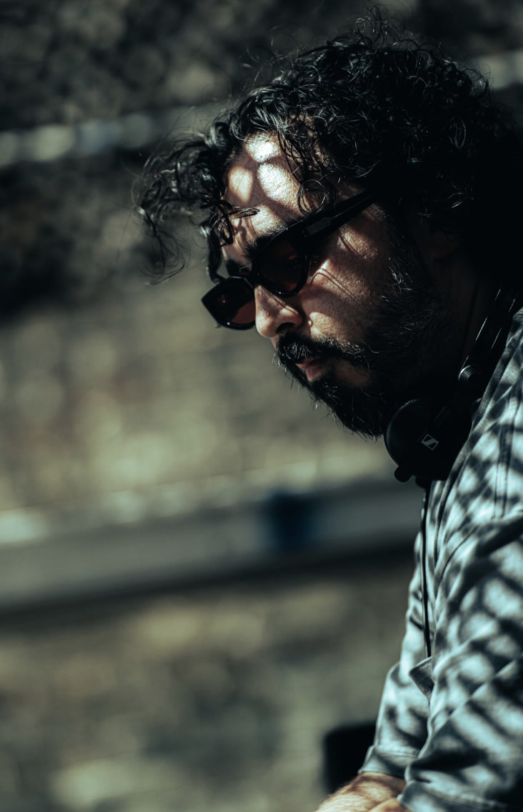

Event 01
[Projections]
Signal Records · Wicker Park · 1343 N. Ashland Ave. · Sept 17 · 6–9p

Featuring
Alex Delgado
Selector and digger rooted in Chicago's deep crates. Alex threads house, post-punk, and experimental vinyl into sets that move a room without ever reaching for a laptop. The kind of DJ who plays records because the format matters.